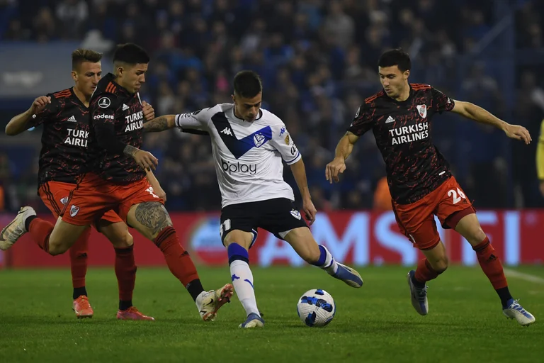

RIVER Y UNA DURA CAÍDA EN LINIERS

VÉLEZ 1 - RIVER 0
River jugó un pésimo partido en la ida de octavos de final de la Copa Libertadores y cayó por la mínima ante Vélez en Liniers. Franco Armani fue la figura indiscutida del equipo de Gallardo: de no haber sido por "el pulpo" la derrota hubiera sido más abultada.
LEER MÁS...